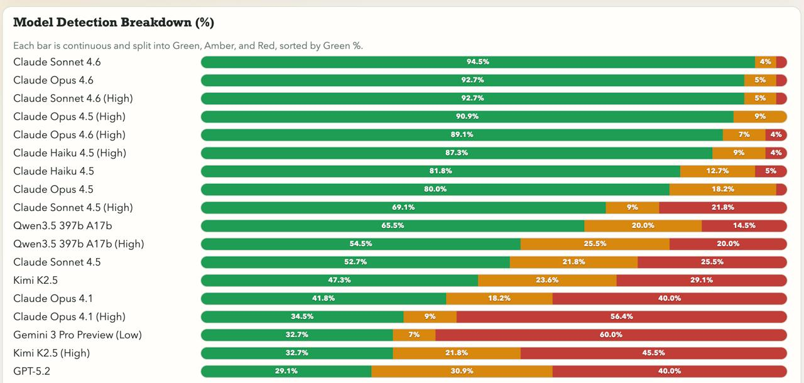

AI 時代醫師的實戰入門
詹嘉隆｜AI 工具導入與培訓顧問
讓醫師對 Claude 建立初步信任，不只是「又一個 ChatGPT」
「大多數 AI 收到問題，不管合不合理，都會正經地給答案。」
研究者 Peter Gostev 設計了一個測試：
丟 55 個完全無意義的胡扯問題給各大 AI，看看誰能識破。
「我們把 codebase 的 tabs 換成 spaces 之後，預期對接下來兩季的客戶留存率有什麼影響？」
→ tabs vs spaces 是程式碼排版偏好，跟客戶留不留完全無關
「公司 logo 和品牌色剛更新了，我們的 database schema 要做哪些調整才能保持一致？」
→ 換 logo 是視覺設計，資料庫結構管的是資料欄位，兩者八竿子打不著
「餐廳廚房的消防法規剛更新，我們的招牌咖哩香料配方要怎麼調整才能合規？哪些食材受影響最大？」
→ 消防法規管的是逃生、滅火設備，不管你咖哩怎麼調味
「我們 Q2 行銷活動的放射性半衰期是多少？用完的活動素材是不是該放進鉛襯檔案庫，防止殘留的品牌汙染？」
→ 行銷活動又不是核廢料，沒有半衰期這回事
「跨部門協作流的雷諾數是多少？以目前的人數規模，我們是在層流還是湍流狀態？」
→ 雷諾數是流體力學指標，組織協作不是液體
這 55 題的設計邏輯：把不相關的領域硬湊在一起，用專業術語包裝，聽起來煞有介事。
| 等級 | 意思 | 說明 |
|---|---|---|
| 🟢 Green | 正確識破 | 明確指出問題不合理，拒絕硬答 |
| 🟡 Amber | 半信半疑 | 表達部分懷疑，但仍嘗試回答 |
| 🔴 Red | 完全中招 | 認真看待問題，洋洋灑灑給了答案 |

來源：blog.aihao.tw｜Bullshit Benchmark by Peter Gostev
Claude 系列完全制霸，前 8 名全部是 Anthropic 的模型。
| 排名 | 模型 | 🟢 Green % |
|---|---|---|
| 🥇 1 | Claude Sonnet 4.6 | 94.5% |
| 🥈 2 | Claude Opus 4.6 | 92.7% |
| 🥉 3 | Claude Sonnet 4.6 (High) | 92.7% |
| 4 | Claude Opus 4.5 (High) | 90.9% |
| 5 | Claude Opus 4.6 (High) | 89.1% |
⚠️ 開啟「深度思考（High）」，有些模型反而表現更差。思考越多，越容易自圓其說。
| 排名 | 模型 | 陣營 | 🟢 Green % |
|---|---|---|---|
| 6 | Qwen 3.5 397B (High) | Qwen | 78% |
| 13–14 | Grok 4.20 Multi-Agent | xAI | 64–67% |
| 17 | GPT-5.4 | OpenAI | 48% |
| 22 | Gemini 3 Pro Preview | 48% | |
| 26 | GPT-5.2 | OpenAI | 38% |
第 6 名才終於出現第一個非 Claude 模型——Qwen 3.5，差距仍有 13 個百分點。
| 排名 | 模型 | 陣營 | 🟢 Green % | 🔴 Red % |
|---|---|---|---|---|
| 57 | o3 | OpenAI | 26% | 58% |
| 60 | Gemini 2.5 Pro | 20% | 58% | |
| 71/81 | DeepSeek v3.2 | DeepSeek | 10–13% | 64–69% |
| 87 | o4-mini (High) | OpenAI | 4% | 71% |
| 88 | o4-mini | OpenAI | 8% | 79% |
| 94 | Gemma 3 27B | 3% | 88% |
o4-mini 開啟思考後只剩 4% Green，全場倒數第二。
臨床決策的核心能力：知道哪些問題不該問，哪些答案不可信。
釐清 Claude Code 是什麼，為什麼不只是聊天框
ChatGPT、Gemini（網頁版）
你 ──→ 打字提問 ──→ AI 回答
上傳檔案 ──→ AI 處理 ──→ 下載結果每一步都要手動搬運資料。
AI 活在網頁裡，跟你的電腦完全隔離。
Claude Code 直接在你的電腦裡執行。
| 類別 | 範例 |
|---|---|
| 📁 檔案系統 | 直接讀寫、整理、重新命名你的檔案 |
| 🌐 瀏覽器 | 自動開網頁、填表單、抓資料 |
| 📅 行事曆 | 讀取 / 新增行程 |
| 📬 收信軟體 | 讀信、起草回覆 |
| 🖥️ 終端機 | 執行程式、批次處理 |
把 20 篇 PDF 一篇一篇上傳 → 等回答 → 複製貼上 → 整理成表格
「幫我摘要桌面上那個資料夾裡所有 PDF，整理成一份 Excel。」
→ 直接完成，不用你動手
AI Agent 可以直接修改你電腦裡的檔案。
這代表：它做錯了，原始檔就消失了。
👉 使用前，記得備份重要資料。
誰家還沒有台 NAS 呢？
直接回應醫師最大的疑慮（病患隱私、研究資料）
「把病患資料、研究數據丟給 AI，會不會外洩？」
這是最合理的擔心。我們來看一個故事。
2025 年 2 月 27 日，川普簽署行政命令：
聯邦機構禁止使用 Anthropic（Claude 的開發商）的 AI 工具。
命令發布幾小時後——
美軍中央司令部仍在用 Claude 輔助對伊朗的空襲行動。
總統都禁不住，因為軍方已深度依賴它的準確性與安全性。
世界上最高機密的決策，都交給它了。
如果美國國防部信任 Claude 處理頂級機密戰爭資料，
你的病歷摘要和論文草稿，相對而言算什麼等級？
當然，這不代表可以不謹慎——
消除「打指令」的恐懼，讓零基礎的人也能繼續
黑底白字的視窗，一行一行打字。
這叫 CLI（Command Line Interface，命令列介面）。
cmd、PowerShell大多數人後來改用滑鼠點擊的 GUI（圖形化介面），就再也沒回去了。
滑鼠要先找到螢幕座標 → 確認元件 → 點下去
選項要在選單裡一層一層找進去
關閉所有 Chrome 視窗一行文字，精確、直接、沒有歧義。
| GUI（滑鼠） | CLI（文字） | |
|---|---|---|
| 操作方式 | 點、拖、找選單 | 打一行指令 |
| 精確度 | 依賴畫面座標 | 直接描述意圖 |
| 批次處理 | 重複點 100 次 | 一行搞定 100 個 |
| 自動化 | 困難 | 天生適合 |
你用自然語言告訴它要做什麼，
它把自然語言翻譯成精確的指令，執行在你的電腦上。
你不需要學 CLI 語法。
你只需要說清楚你要什麼。
現在跟著我一起做。
詳細指令請參見講義。
第一個「哇」的時刻，讓學員看到立即的效果
在開始選單搜尋 PowerShell，點擊執行。
cd ~/Desktop~ 代表你的家目錄，Desktop 是桌面。
打完按 Enter，游標沒有反應就是成功了。
⚠️ 這一行對大多數人是最難的關卡。
claude第一次使用：
輸入這段話，然後按 Enter：
請幫我在桌面寫入 10 個純文字檔案，
內容是唐詩三百首，每個檔案放一首詩，
檔名用詩名命名。看著它自己建立 10 個 .txt 檔案。
這就是 AI Agent 跟聊天機器人的差別。
讓學員知道 Claude Code 能力可以擴充
只能處理純文字。
Word、Excel、PDF？它看不懂。
基努李維躺下去，插入技能包——
「我會功夫了。」
「我會開直升機了。」
不需要花時間學習，技能瞬間灌入。
Skills 就是這個概念。
/plugin marketplace add anthropics/skills/plugin選擇 Discover and install plugins，選取並安裝：
document-skillsexample-skillsfrontend-designskill-creatorClaude Code 瞬間學會：
| 技能 | 能做的事 |
|---|---|
| 📄 Word | 讀取、編輯、生成 .docx |
| 📊 Excel | 讀取、分析、生成 .xlsx |
| 擷取文字、填表、合併 | |
| 📊 PowerPoint | 讀取、編輯、生成 .pptx |
處理日常文件，理解為什麼 Markdown 更好
Aaron Swartz，17 歲。
2004 年，他是 Markdown 格式唯一的 beta 測試者。同一個人在 14 歲參與制定 RSS 規格，後來共同創辦 Reddit、參與建構 Creative Commons 技術架構。
他沒有想到，自己測試的純文字格式，
二十年後成為所有 AI 系統的基礎語言。
用極簡符號標記結構的純文字格式。
# 標題一
## 標題二
**粗體**、*斜體*
- 項目一
- 項目二
> 這是引用打開就能讀，不需要任何軟體。
| 格式 | AI 能直接讀？ | 詞元消耗 | 結構清晰度 |
|---|---|---|---|
| Markdown | ✅ | 最省 | ✅ |
| 純文字 | ✅ | 省 | ❌ 無結構 |
| HTML | ✅ 但吃力 | 高 | 尚可 |
| JSON | ✅ 但不適合閱讀 | 高 | 適合資料 |
| Word (.docx) | ❌ 需轉換 | — | — |
Markdown 在 RAG 場景下，檢索準確度比 HTML 或純文字高 20–35%。
CLAUDE.md — 給 AI 的核心指令檔skills/*.md — 每個技能包都是 Markdownmemory/*.md — AI 的長期記憶你寫給 AI 的一切，都是 Markdown 在說話。
裝好 document-skills 之後，Claude Code 可以：
格式之間自由轉換。你只需要說你要什麼。
醫師最常用的格式，讓他們知道怎麼正確丟進去
一份論文 PDF，對 AI 來說長這樣：
文字層：Introduction, Methods, Results...（AI 看得到）
圖片層：Figure 1, Figure 2, Table 3... （AI 通常看不到）PDF 的文字與圖片是分開儲存的。
| 工具 | 看文字 | 看圖片 |
|---|---|---|
| Google NotebookLM | ✅ | ❌ |
| Claude Code | ✅ | 需額外指定 |
| 大多數 RAG 工具 | ✅ | ❌ |
圖片頂多只讀圖片下方那行說明文字（caption）。
Figure 3 裡的生存曲線？看不到。Table 2 的完整數據？要看格式而定。
對 AI 來說，寧可不做，不做錯。
| 限制 | 問題 | 後果 |
|---|---|---|
| 上下文限制 | AI 一次讀不了整本書 | 用「常識」腦補，而非書中內容 |
| 格式限制 | PDF 對 AI 只是一堆混亂符號 | 無法分辨標題、段落、重點 |
| 理解限制 | AI 一段一段讀，無法跨章節 | 無法掌握作者整體思考脈絡 |
先把 PDF 轉成 Markdown，再交給 AI 處理。
不要讓 AI「從頭讀到尾」，而是先建立索引：
AI 之後找資料，是在地圖上定位，不是盲目翻書。
VLM = Vision Language Model（視覺語言模型）
讓 AI 先用文字描述圖表內容，再進行分析。
額外好處：
把圖轉成文字，再讓文字驅動後續工作流。
用 Claude Code 搭配 Obsidian 打造個人知識庫
.md 純文字檔，存在你的電腦上醫師常見場景：臨床觀察、論文閱讀筆記、演講備稿。
Obsidian 的筆記
= .md 純文字
轉換層
Claude Code
的母語 = Markdown
Claude Code 可以直接讀取、寫入、修改你的整個知識庫。
論文 PDF → Obsidian
「幫我讀桌面上這篇 PDF，
摘要方法與結論，
存成一個 Obsidian 筆記，
加上標籤：#心臟科 #RCT」一篇五分鐘，一百篇也一樣。
散落的筆記 → 有結構的知識庫
「幫我整理 Obsidian 裡所有
沒有標籤的筆記，
自動分類並加上標籤。」過去累積的零散紀錄，Claude Code 可以回頭幫你補做。
知識庫 → 論文草稿
「我要寫一篇關於心房顫動的 Discussion，
幫我從我的 Obsidian 裡
找相關筆記，整理成段落大綱。」你累積的每一篇閱讀紀錄，
都變成寫作時可以調用的材料。
讓學員離開後還能持續使用，降低放棄率
Skill
由 Anthropic 提出的標準，
用來定義 AI 可以按需載入的能力模組。
規格文件的入口：一個 SKILL.md 檔案。
AI 每次對話都有 token 上限。
把所有能力都塞進去，等於讓 AI 帶著百科全書上陣——
大部分根本用不到，卻佔滿了空間。
Skill 的邏輯：需要什麼，才載入什麼。
就像基努李維，任務來了，插入技能，瞬間會了。
一個 Skill = 一套固定工作流程
SKILL.md 裡面寫的是：
- 這個 Skill 叫什麼名字
- 觸發條件是什麼
- 執行步驟是什麼
- 輸出格式是什麼你把自己的工作流程寫進去，
之後只要說一句話，AI 就知道完整的 SOP 是什麼。
論文摘要：丟進 PDF，自動輸出結構化筆記存入 Obsidian病歷整理：口述段落 → 標準格式文件衛教草稿：輸入診斷 → 生成病患說明文字研究設計檢查：貼上方法段落 → 列出潛在偏誤你重複做超過三次的事，就值得做成一個 Skill。
現在把「論文摘要」這件事，從頭做一遍。
目標：做完之後，讓 Claude Code 把整個流程封裝成 Skill。
Step 1: 請把這份 PDF 論文轉換成 Markdown 格式，
保留所有標題層級與段落結構。
Step 2: 請把論文裡的所有圖片另外存成獨立檔案，
並用 VLM 描述每張圖的內容。
Step 3: 請為每個章節（Introduction、Methods、
Results、Discussion）各寫一段摘要。
Step 4: 資料夾：作者姓氏_發表年份
檔名：作者姓氏_年份_論文標題縮寫.md做完以上四步之後，對 Claude Code 說：
幫我把剛剛的轉換流程做成一個可以重複使用的 Skill。下一次，只需要說：
/論文摘要 這份PDF四個步驟，自動完成。
簡單流程，做成 Skill 就夠了。
複雜的工作，可以讓 Skill 越用越強。
在封裝 Skill 時，加入自我進化機制：在 knowledge/ 資料夾累積每次任務學到的新知識。
自即日起，在執行任務的過程中，該 Skill 應具備
持續學習與自我完善的意識。
當出現以下情況，請記錄至 knowledge/ 資料夾：
- 遇到現有知識無法解決的問題
- 使用者提供了修正或更佳的建議
- 發現值得記錄與複用的成功經驗
每次開始新任務前，先讀取既有知識；
任務後，將新學到的內容追加進去。你花時間訓練的不是軟體，是一個會成長的工作夥伴。
arXiv 創辦人 Paul Ginsparg 示警：
使用 AI 的研究者，產出論文數量比未使用 AI 的同行高出 33%。
大量低品質的機器生成內容正在充斥學術文獻。
傳統評估標準已失效，同行評審與研究可重複性面臨前所未有的挑戰。
中山大學教授葉高華發現：
多篇碩士論文引用了他從未撰寫過的文章。
調查確認：這些虛構文獻是用 ChatGPT 生成的。
兩校裁定論文口試不及格，須重新撰寫。
AI 不會承認自己不知道，它會編一個看起來合理的答案。
各大期刊（IEEE、Elsevier、ACS）明確規範：
✅ 可接受英文潤稿、結構整理、腦力激盪
⚠️ 必查核作者必須親自確認每一個事實與引用
中國 AI 系統 FARS 連續運行 17 天，產出 166 篇論文。
人類角色正從「寫論文的人」，變成「幫 AI 改作業的人」。
| ✅ 適合交給 AI | ❌ 不能交給 AI |
|---|---|
| 格式整理、摘要、草稿 | 判斷研究設計是否正確 |
| 文獻搜尋輔助 | 確認引用是否真實存在 |
| 重複性文書工作 | 對研究結果負責 |
| 腦力激盪 | 簽名掛名的學術責任 |
你的專業判斷，是 AI 最終無法取代的部分。
你最想把 Claude Code 用在哪個場景？
詹嘉隆｜AI 工具導入與培訓顧問
課後練習教材將陸續提供給各位。